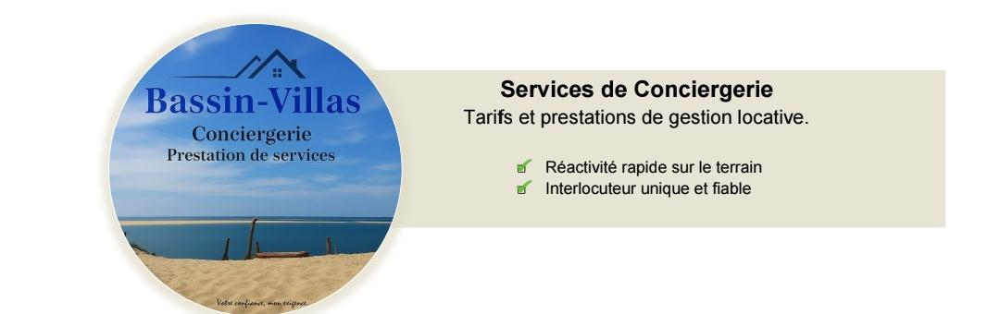
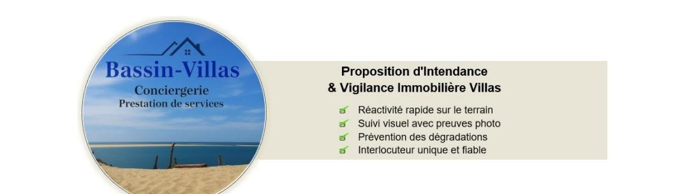

Bassin-Villas — Conciergerie, prestation de services

1. Notre Formule "Gestion Complète" (Clé en main)
La solution idéale pour déléguer 100% et maximiser vos revenus locatifs l'esprit serein.
Notre Commission : 20 % TTC (Calculée uniquement sur le montant des revenus locatifs générés)
Ce qui est inclus dans notre formule :
- 📷 Valorisation du bien : Shooting photo et rédaction d'une annonce optimisée.
- 🌐 Multi-diffusion : Publication et synchronisation des calendriers sur les plateformes leaders (Airbnb, Booking.com, Abritel).
- 📈 Yield Management : Optimisation dynamique des prix en fonction de la saisonnalité et des événements locaux.
- 💬 Relation voyageurs 7j/7 : Gestion des réservations, réponses aux questions et assistance pendant le séjour.
- 🔑 Accueil et Départ : Gestion des entrées (physiques ou connectées) et check-out avec contrôle du bien.
- 🧺 Coordination du ménage : Planification du ménage professionnel et de la blanchisserie entre chaque voyageur.
2. Nos Prestations « A la Carte »
Vous gérez vos annonces à distance et souhaitez un relais de confiance sur place ? Choisissez nos services au forfait.
Accueil & Logistique
- Check-in seul (Remise des clés + livret d'accueil) : à partir de 35 €
- Check-out seul (Contrôle du bien + récupération des clés) : à partir de 30 €
- Pack Accueil & Départ (Le même jour) : à partir de 60 €
- Intervention d'urgence / Dépannage (Hors coût des pièces) : 45 € / heure
Ménage & Blanchisserie
Les tarifs varient selon la superficie du logement (Studio à Villa).
- Forfait Ménage Professionnel : de 50 € à 150 € (Frais généralement imputés au voyageur)
- Location de linge (Kit lit double + serviettes) : 27 € / lit par séjour
- Veille / Gardiennage basse saison (2 visites mensuelles) : 80 € / mois

Pourquoi choisir ma prestation ?
- Ancrage Local : Résident à Arcachon, proximité immédiate et intervention rapide.
- Expérience opérationnelle : maîtrise de la gestion de copropriété et de volumes importants
La Surveillance et Vigilance (Le cœur du contrat)
- Passages réguliers : 1 à 2 fois par semaine pour vérifier l'état général (intérieur/extérieur).
- Après intempéries : Passage systématique après un coup de vent ou un gros orage (très fréquent sur le Bassin) pour vérifier les toitures, les baies vitrées et les infiltrations.
- Aération : Ouvrir les fenêtres pour éviter l'humidité et l'odeur de « renfermé » typique des maisons de bord de mer.
- Relevé du courrier : Réexpédition ou traitement des factures/avis urgents.
La Gestion de la Maintenance (Le « Chef d'orchestre »)
- Suivi des contrats : Entreprises espaces verts, jardinage / Suivi entretien pisciniste, Maintenance sécurité et protection (Entreprises d'alarme) etc.
- Accueil des artisans : Ouverture de la porte, surveillance des travaux de réparation et vérification du chantier avant le départ de l'artisan.
- Petite maintenance : Changement d'une ampoule, vérification du bon fonctionnement du chauffage avant l'hiver. (Devis sur demande)

Forfait base Mensuel « Sérénité & Vigilance »
Tarif mensuel indicatif basé sur la superficie du bien : 450 € à 650 €
Ce forfait fixe garantit la sécurité et le maintien en état du patrimoine tout au long de l'année.
- Vigilance hebdomadaire : Passage 1 fois par semaine (contrôle des accès, vérification des fuites, aération, relevé du courrier).
- Vigilance post-intempéries : Passage systématique après chaque tempête ou fort coup de vent sur le Bassin (vérification toiture, ouverture jardin).
- Gestion des intervenants : Accueil et contrôle des prestataires extérieurs suite intervention (jardinier, pisciniste, artisans ou autres).
- Reporting : Compte-rendu par SMS ou mail (rapport + photos digitalisés) si événement particulier.
Service de la conciergerie (Le « Luxe »)
- Forfait par intervention pour la mise en service complète du bien avant arrivée : 85 € à 140 €
Ouverture des volets, mise en route chauffage/climatisation, mise en place mobilier extérieur, liste de courses de bienvenue sur mesure (montant des achats facturé au réel sur présentation de justificatifs).
Fermeture : Sécurisation intégrale du bien après départ — contrôle des installations, coupure des arrivées si requis, fermeture complète, activation de l'alarme et mise en protection des volets. - Forfait d'intervention d'urgence par déplacement (Jour) : 100 € + 40 € / heure
- En fonction période annuelle, intervention rapide suite à déclenchement d'alarme, suspicion d'intrusion ou incident technique, intempéries etc.
Prestations Techniques (à la demande)
Ces prestations sont facturées en sus du forfait de base.
- Entretien et Nettoyage facturé à l'heure : 35 € à 40 €
Ménage approfondi avant/après séjour, entretien des matériaux nobles (marbre, parquets, terrasses).
Toute demande spécifique pourra faire l'objet d'une proposition tarifaire forfaitaire personnalisée.